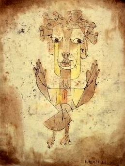

Próx
2026 El primer artículo está en camino. Pronto
2026 El primer artículo está en camino. Pronto
"La historia no es un catálogo de hechos, sino un palacio con mil puertas donde siempre hay nuevos
aposentos por descubrir."
Historiador · Consultor · Escritor
Me dedico al estudio del pasado como herramienta para entender el presente. La historia es una disciplina narrativa que une generaciones, crea identidades y produce consecuencias que moldean el presente. Como ciencia, es rigurosa y con una rica tradición académica, pero sin filosofía sus frutos son secos y poco satisfactorios. Este archivo es una habitación en el palacio de la historia; un lugar para pensar y descubrir lo que el tiempo ha guardado celosamente.
Ver escritos recientes ↓Aarón Morales — historiador, consultor y escritor. Desde Ciudad de México, en busca de lo que el tiempo deja atrás.
toca para volverLa Historia, de Juan Cordero. Lleva un libro en la mano y a sus pies el Passato y l'Avvenire — el pasado y el porvenir. Museo Nacional de Arte, CDMX.
toca para volverTronco de un ahuehete plantado en 1507. Sus anillos marcan 500 años de historia nacional. Hoy preservado en el Museo Kaluz, CDMX.
toca para volverBiblioteca Miguel Lerdo de Tejada. Un lugar tranquilo y bello para leer, con libros que pocos conocen y menos frecuentan.
toca para volverRetrato de una deidad prehispánica de la zona de Los Dinamos, en las faldas del Ajusco. El pasado que sobrevive en los márgenes de la ciudad.
toca para volver
"El ángel quisiera detenerse, despertar a los muertos y recomponer lo despedazado. Pero una tormenta desciende del paraíso... Eso que llamamos progreso."
Walter Benjamin, Tesis IX
toca para volver